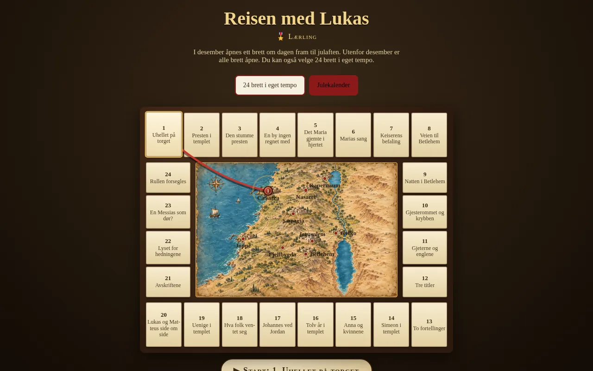
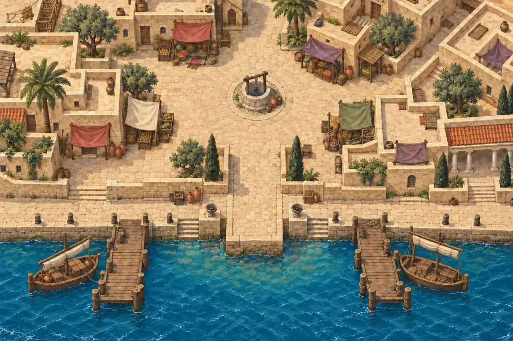
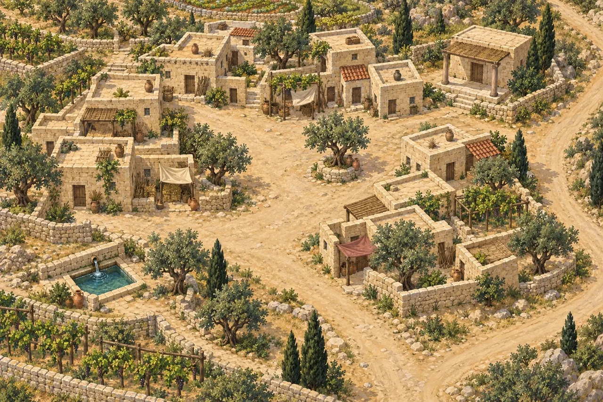
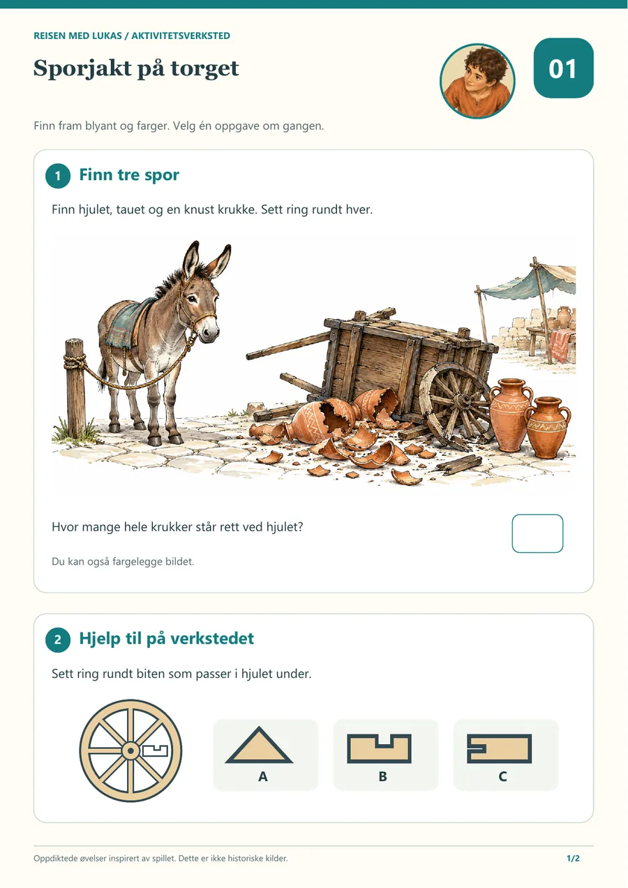

Pressepakke · julekalender på nett · 1.–24. desember
Reisen med Lukas
En julekalender på nett der den som spiller, blir lærlingen til legen Lukas, går rundt i landet der Jesus levde, snakker med folk som var der, og samler fortellingene om Jesus i vitneboka. Fra 8 år. Godt å spille sammen med foreldre eller besteforeldre.
Luke 1 er gratis, uten konto og uten e-post. Her ligger trailer, bilder i høy oppløsning, faktaark og ferdig tekst dere kan lime inn i sak, nyhetsbrev eller på Facebook.
- Ingen kjøp i appen
- Ingen reklame
- Ingen sporing
- Ingen konto
Korte fakta
Dere kan også laste ned det samme som faktaark (tekstfil).
| Hva | Julekalender på nett, basert på Lukasevangeliet |
|---|---|
| Når | 1.–24. desember, én luke om dagen. Etter julaften er alle lukene åpne. |
| Tid | Vanligvis 5–15 minutter per luke. Den som vil mer, kan bli lenger. |
| Alder | Fra 8 år. Godt å spille sammen med foreldre eller besteforeldre. |
| Luke 1 | Gratis, uten konto og uten e-post |
| Pris | Personlig kode 250 kr (én person, luke 2–24). Familiekode 500 kr (hele husstanden). Engangskjøp, uten abonnement. |
| Slik spilles det | I nettleseren på telefon, nettbrett og PC. Ingenting må installeres. |
| Innhold | Malte spillbrett, samtaler, småspill og aktivitetsark til utskrift for hver dag |
| Gavekort | PDF etter kjøp, med koden ferdig påtrykt |
| Også i butikk | Personlig kode selges også i den kristne bokhandelen Ordet è Ditt. Familiekoden kjøpes bare på nettsiden. |
| Betaling | Bankoverføring. Koden kommer med en gang. Vipps kommer snart. |
| Grunnlag | Gjenfortalt fra Lukasevangeliet med henvisning til kapittel og vers. Klassisk kristen tro. Det som er diktet til spillet, holdes atskilt fra det som er hentet fra Bibelen og andre kilder. |
Sitat fra Reisen med Lukas
Dere kan bruke disse linjene som sitat fra Reisen med Lukas.
«Bli lærlingen til legen Lukas, gå rundt i landet der Jesus levde, snakk med folk som var der, og samle fortellingene om Jesus i vitneboka.»
Reisen med Lukas
«Dere betaler én gang for koden, og så er det ferdig. Inne i spillet finnes det ingen butikk, ingen reklame og ingen sporing.»
Reisen med Lukas
Bilder og logo
Bildene kan brukes ved omtale av spillet. Krediter med: Reisen med Lukas / reisenmedlukas.no. Ingen ekte barn er avbildet. Last ned alle bildene som zip, eller hvert bilde for seg. Bildetekster ligger også i zip-filen.










Et stillbilde fra traileren uten avspillingsknapp ligger i zip-filen (stillbilde-trailer.jpg, 720 × 1280). Musikk i traileren: «Born Of The Sky» av Scott Buckley (CC BY 4.0), scottbuckley.com.au.

Ferdig tekst til nyhetsbrev, nettside og Facebook
Dere får gjerne lime inn og tilpasse. Kortversjonen passer til Facebook og korte nyhetsbrev. Langversjonen gir litt mer bakgrunn.
Kort versjon
Reisen med Lukas er en julekalender på nett, basert på Lukasevangeliet. Fra 1. til 24. desember åpnes én luke om dagen. Fra 8 år. Godt å spille sammen med foreldre eller besteforeldre. Luke 1 er gratis, uten konto. Hvis dere vil fortsette, koster en personlig kode 250 kr for én person, eller 500 kr for hele husstanden. Det er et engangskjøp. Ingen kjøp i appen og ingen reklame. Se traileren og prøv luke 1: https://reisenmedlukas.no
Lang versjon
Reisen med Lukas er en julekalender på nett, basert på Lukasevangeliet. Fra 1. til 24. desember åpnes én luke om dagen. Den som spiller, blir lærlingen til legen Lukas, går rundt i landet der Jesus levde, snakker med folk som var der, og samler fortellingene om Jesus i vitneboka. Fra 8 år. Godt å spille sammen med foreldre eller besteforeldre. Hver luke er en liten sak som vanligvis tar 5–15 minutter. Underveis er det malte spillbrett, småspill og aktivitetsark til utskrift for hele familien. Spillet kjører i nettleseren på telefon, nettbrett og PC, uten at noe må installeres. Luke 1 er gratis, uten konto og uten e-post, så dere kan prøve selv før dere bestemmer dere. En personlig kode koster 250 kroner og låser opp luke 2–24 for én person. En familiekode koster 500 kroner og gjelder hele husstanden. Det er et engangskjøp, uten abonnement. Inne i spillet er det ingen butikk, ingen reklame og ingen sporing. Etter kjøpet kan dere laste ned et gavekort som PDF, med koden ferdig påtrykt. Personlig kode selges også i den kristne bokhandelen Ordet è Ditt. Familiekoden kjøpes bare på nettsiden. Se traileren og prøv luke 1: https://reisenmedlukas.no
Del på Facebook
Lenken under åpner Facebooks eget delingsvindu med nettsiden. Dere kan også kopiere adressen og lime den inn der dere vil.
Facebook-side: Reisen med Lukas
Instagram: @reisenmedlukas
Testkode og kontakt
Hvis dere vil teste hele reisen før eventuell omtale, sender vi en gratiskode. Skriv til lihai260@hotmail.com. Vi legger ikke koder ut her på siden.
Spørsmål, skjermbilder og intervjuhenvendelser kan gå til samme adresse.
Vennlig hilsen
Lars Magne Grødem
Reisen med Lukas
lihai260@hotmail.com
https://reisenmedlukas.no